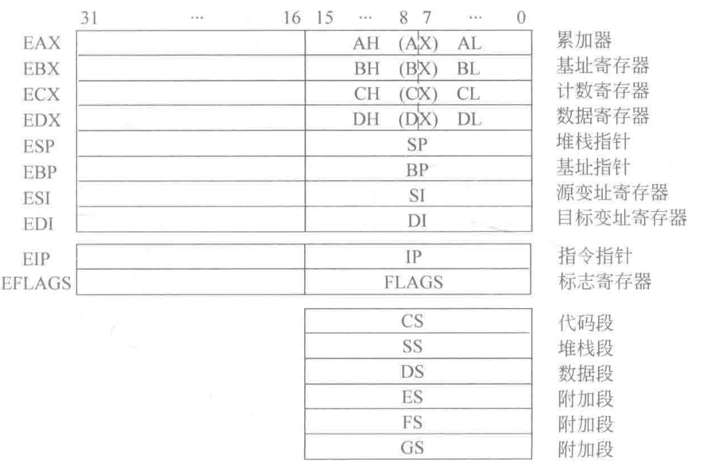
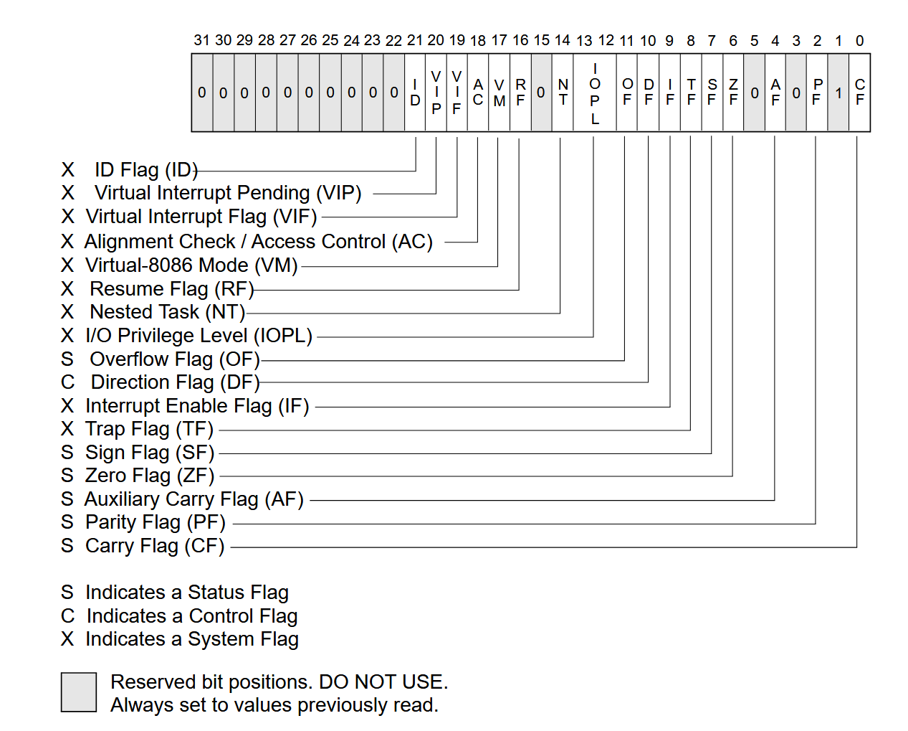
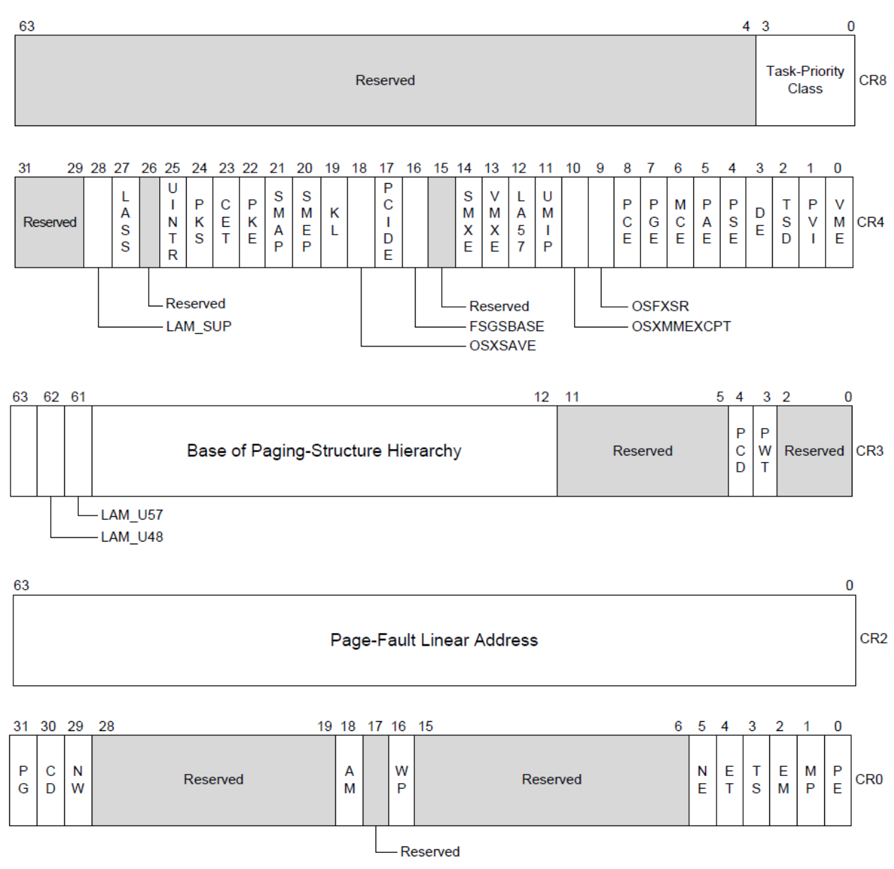
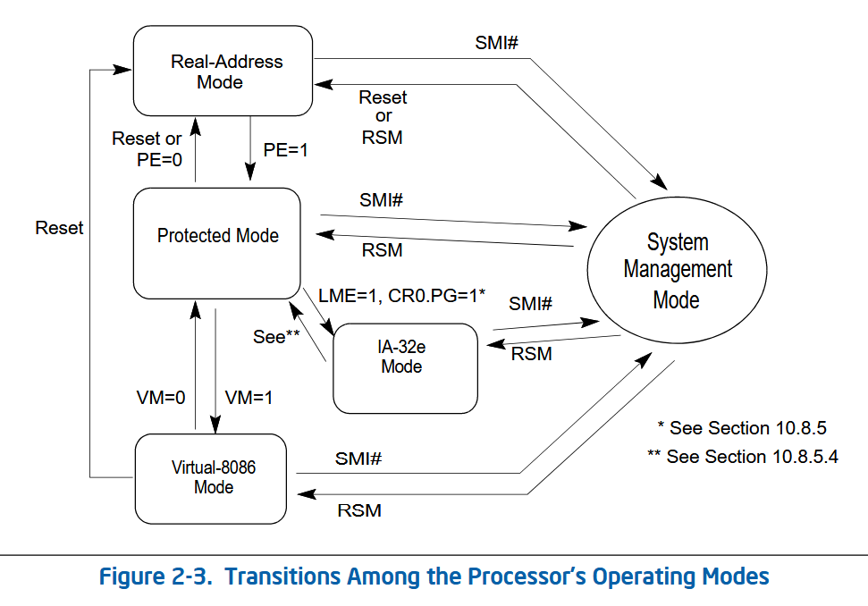
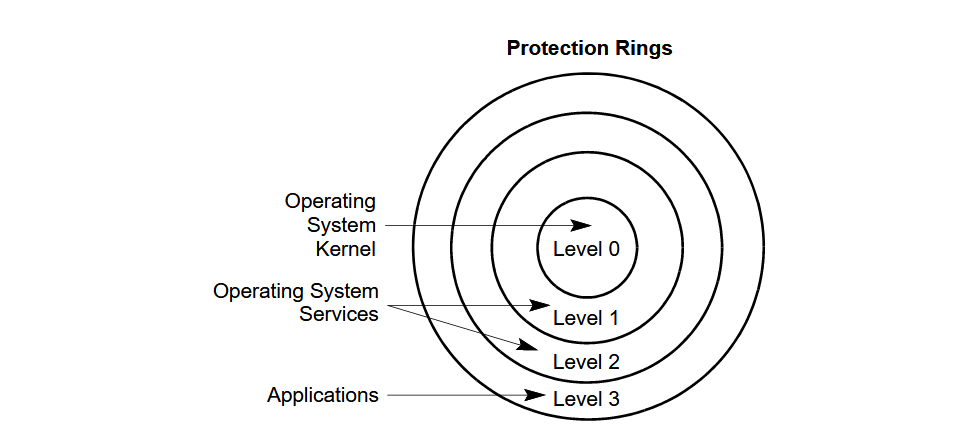
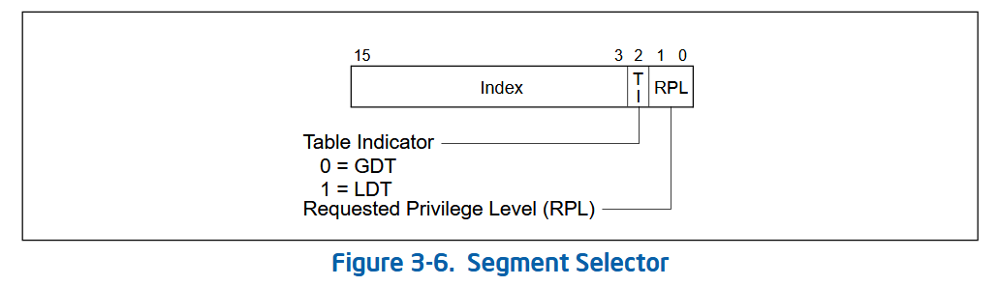
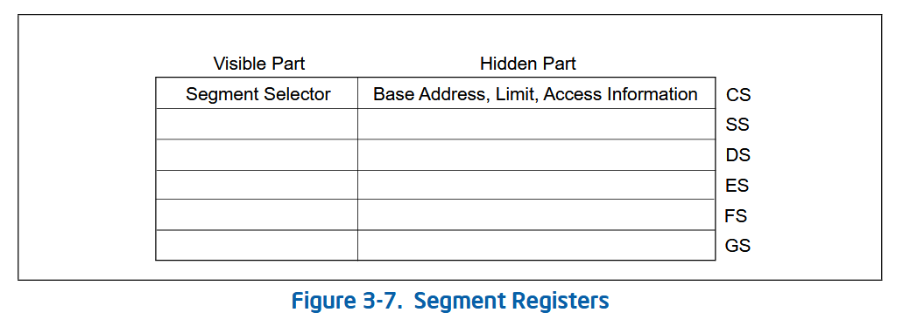
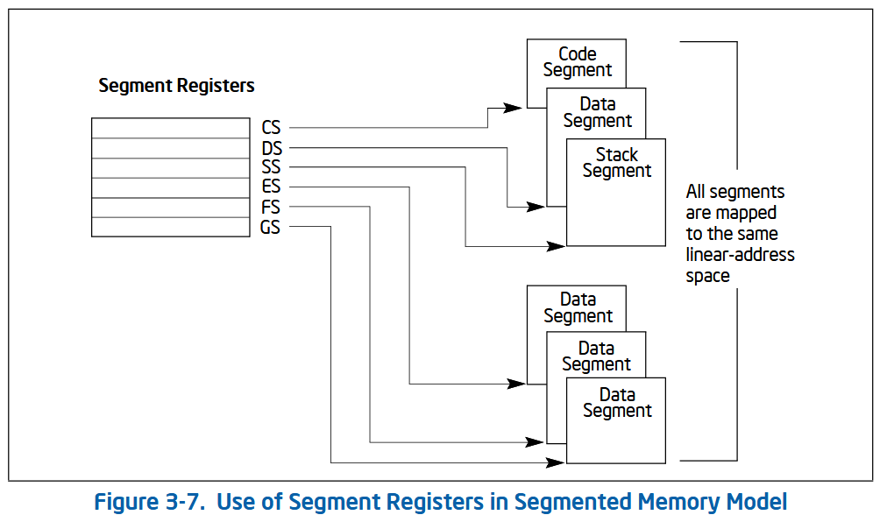

x86 ISA介绍
概念区分
ISA：Instruction Set Architecture，ISA 是硬件和软件之间的抽象接口（或者说是一份“合同”）。它定义了程序员或编译器编写软件时必须了解的所有信息，而不涉及硬件的具体电路设计。涵盖指令集（如 ADD, JUMP）、寄存器结构（如 RAX, R0）、数据类型、寻址模式、内存模型、中断处理等
微架构：Microarchitecture，微架构（又称计算机组织）是 ISA 的具体逻辑实现。它决定了处理器内部如何布置流水线、缓存、执行单元等。涵盖流水线级数、分支预测器、高速缓存（L1/L2/L3）的大小、乱序执行逻辑、算术逻辑单元（ALU）的数量等。
| 特性 | ISA (指令集架构) | 微架构 (Microarchitecture) |
|---|---|---|
| 定义层面 | 抽象层 / 规范 | 物理层 / 实现 |
| 关注点 | What（处理器能做什么） | How（处理器如何高效执行） |
| 使用者 | 编译器作者、汇编程序员 | 芯片设计师、硬件工程师 |
| 兼容性 | 跨代兼容（保证程序能跑） | 每一代都在变（追求性能提升） |
| 组成部分 | 指令、寄存器、数据格式 | 缓存、流水线、执行单元 |
一个 ISA 可以有多种微架构实现。 例如，Intel 和 AMD 的处理器微架构完全不同，但因为它们都遵循 x86 ISA，所以你编写的
.exe程序在两者的 CPU 上都能正常运行。这就是为什么你可以自由更换 CPU 而不需要重装所有软件。
x86-Intel ISA
寄存器
| 寄存器类型 | 64位名称 | 数量 | 主要用途 |
|---|---|---|---|
| 通用寄存器 | RAX-R15 |
16 | 数据运算、暂存、地址计算 |
| 栈指针 | RSP, RBP |
2 | 管理函数调用栈 |
| 指令指针 | RIP |
1 | 存储下一条指令地址 |
| 状态标志 | RFLAGS |
1 | 存储运算结果的状态（如正负、零） |
| 向量寄存器 | XMM/YMM |
16/32 | 高性能并行计算 (SIMD) |
32位的主要寄存器如下：

通用寄存器
x86 最大的特点是向下兼容，即嵌套模式。一个 64 位的寄存器实际上包含了它的 32 位、16 位和 8 位版本。例如A寄存器在32、16、8位上的区分如下：
- RAX: 64 位全长 (x86-64)
- EAX: 低 32 位 (x86-32)
- AX: 低 16 位 (8086)
- AH / AL: AX 的高 8 位和低 8 位
8 个传统寄存器及其特殊用途如下：
- RAX (Accumulator): 累加器。系统调用的编号以及函数的返回值通常放在这里。
- RBX (Base): 基址寄存器。常用于内存寻址。
- RCX (Count): 计数器。循环指令（如
LOOP）或位移操作会自动使用它。 - RDX (Data): 数据寄存器。在乘除法运算中存放溢出数据或余数。
- RSI / RDI (Source/Destination Index): 源/目的变址寄存器。在字符串拷贝等操作中分别指向来源和目标地址。
- RBP (Base Pointer): 栈基址指针。指向当前函数栈帧的底部。
- RSP (Stack Pointer): 栈顶指针。永远指向当前线程栈的最顶部。
x86-64 新增寄存器如下：在 64 位模式下，Intel 额外增加了 8 个通用寄存器，命名简单粗暴：
- R8, R9, R10, R11, R12, R13, R14, R15。
- 它们同样可以访问低位，例如
R8D(32位),R8W(16位),R8B(8位)。
指令指针寄存器(Instruction Pointer)
RIP (64位) / EIP (32位): 这是 CPU 的“指针”。它存储了下一条将要执行的指令在内存中的地址。程序员不能直接用 MOV 修改它，只能通过 JMP、CALL 或 RET 等指令间接改变它的值。
标志寄存器 (Flags Register)
FLASG/RFLAGS (64位) / EFLAGS (32位): 它不是存放一个大数字，而是由许多个“位”（Bit）组成的开关，反映了上一次运算的状态，从
- 8086 (16位)：叫
FLAGS。 - 80386 (32位)：叫
EFLAGS（Extended FLAGS）。低 16 位和 8086 的 FLAGS 完全一样，高 16 位增加了如 VM（虚拟 8086 模式）、AC（对齐检查）等功能。 - x86-64 (64位)：叫
RFLAGS。它将 EFLAGS 扩展到 64 位，但目前高 32 位全部保留（全为 0），没有定义新的功能。

从Intel架构手册的图来看，S代表状态位共有6位，C代表控制位共有1位，X代表系统位共有10位。具体看Intel® 64 and IA-32 Architectures Software Developer’s Manual Volumn1中的3.4.3 EFLAGS Register一节中有详细介绍。
IOPL：I/O Privilege Level
段寄存器 (Segment Registers)
在现代 64 位系统中，段寄存器的作用已经大大削弱（基本进入“平坦模型”），但在底层内核开发中依然存在：
- CS: 代码段寄存器（Code Segment）
- DS / SS / ES: 数据段、栈段、附加段
- FS / GS: 在现代 Windows/Linux 中常用于存储线程本地存储 (TLS) 的基地址。
多媒体与向量寄存器 (SIMD)
为了加速图像处理、科学计算和 AI 运算，x86 引入了超大的专用寄存器：
- MMX (64位): 已过时。
- XMM (128位): 用于 SSE 指令集（共 16 个，XMM0-XMM15）。
- YMM (256位): 用于 AVX 指令集。
- ZMM (512位): 用于 AVX-512 指令集。
控制寄存器
在Intel SDM第 3 卷（Volume 3A）：System Programming Guide, Part 1有介绍（Section 2.5 CONTROL REGISTERS）。

内存组织
CPU工作状态
| 特性 | 实模式 (Real Mode) | 保护模式 (Protected Mode) | SMM 模式 |
|---|---|---|---|
| 可见性 | 用户/系统可见 | 用户/系统可见 | 对操作系统透明 (隐藏) |
| 地址空间 | 仅 1 MB | 4 GB (32位) / 理论 16 EB | 独立的 SMRAM 空间 |
| 进入方式 | 上电自检、复位 | 修改 CR0.PE 位 | 硬件中断 (SMI) |
| 主要用途 | 引导系统、DOS | 运行现代操作系统 | 电源管理、硬件安全、BIOS 修复 |
| 权限级别 | 无 (全公开) | 严格的分级 (Ring 0-3) | 最高级别 (超越 Ring 0) |
实模式 (Real-Address Mode)，这是 CPU 上电后的“初始状态”，为了兼容 1978 年的 8086 处理器。
- 寻址方式：使用简单的 段地址 × 16 + 偏移地址。只能访问 1MB 的内存。
- 特权级：没有特权级概念，任何程序都可以改写任何内存或直接操作硬件。
- 用途：系统引导（BIOS/UEFI 初期）、简单的操作系统（如 MS-DOS）。
- 缺点：非常不安全，没有内存保护，一个程序崩溃会导致全机死机。
保护模式 (Protected Mode)，这是现代操作系统的运行基石（32位系统的核心，64位系统的基础）。
- 寻址方式：通过 段描述符表 (GDT/LDT) 和 分页机制 (Paging)。支持 4GB 甚至更大的虚拟内存。
- 特权级：引入了 Ring 0 - Ring 3 的保护机制。
- 用途：运行 Windows、Linux 等现代操作系统。
- 核心逻辑：硬件强制执行访问控制。如果用户程序（Ring 3）试图访问内核内存（Ring 0），CPU 会抛出异常。
SMM 模式 (System Management Mode)，SMM 被称为 “Ring -2”，因为它比操作系统内核（Ring 0）拥有更高的优先级，且对操作系统完全透明。
- 进入方式：只能通过硬件产生的 SMI (System Management Interrupt) 进入。当你按下电源键、笔记本合盖、或系统温度过高时，硬件会发出 SMI。
- 可见性：一旦进入 SMM，CPU 会暂停当前运行的操作系统（不论是 Windows 还是内核），转而执行一段存储在 BIOS 中的特殊代码。操作系统根本不知道自己被暂停过。
- 内存空间：它拥有独立的内存区域，称为 SMRAM。正常模式下的程序（包括内核）无法访问这块内存。
- 退出方式：执行
RSM(Resume) 指令，CPU 恢复到被中断前的状态（无论是实模式还是保护模式）。

特权级别
x86把CPU分为四个特权等级，权限从ring0~ring3依次下降。

厘清几个概念，段选择子（SS）是一个一个内容抽象，存在在段寄存器中（Visible Part），x86的段寄存器有CS、DS、…等。其中段选择子的RPL（Requested Privilege Level）就代表了当前的指令在访问该段时“声明”的权限级别。


